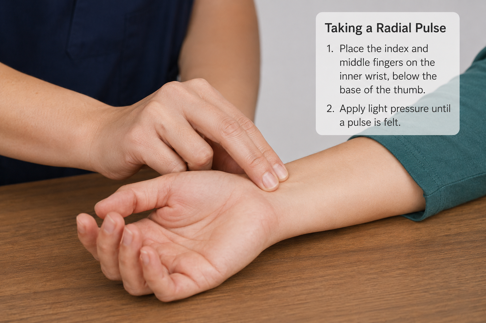
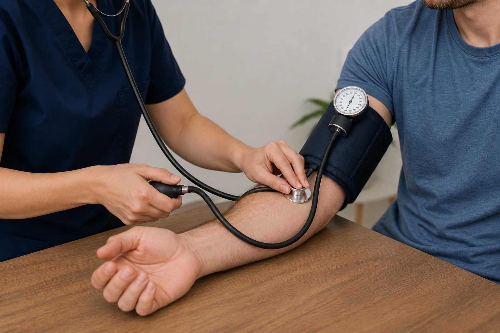
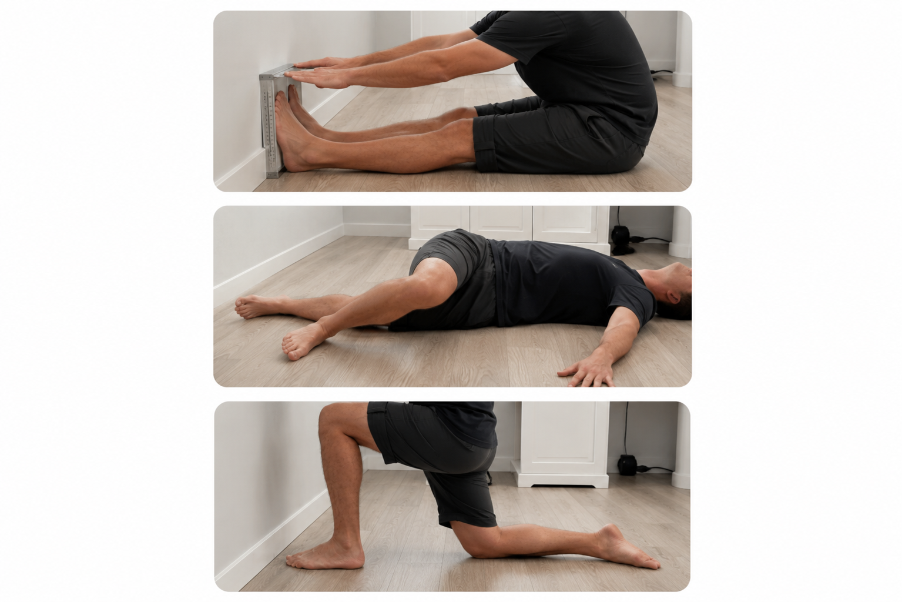
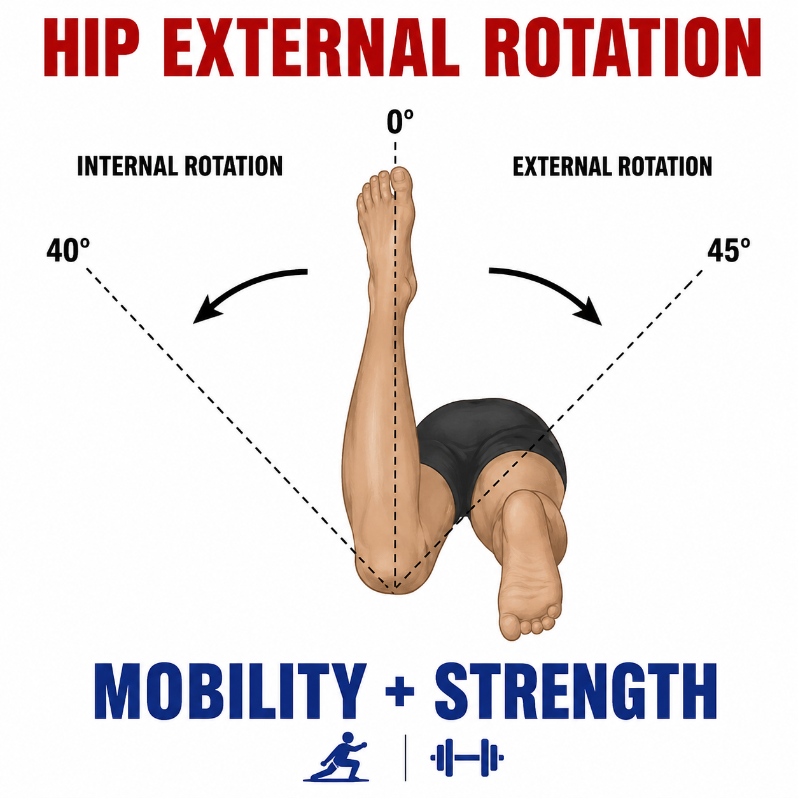
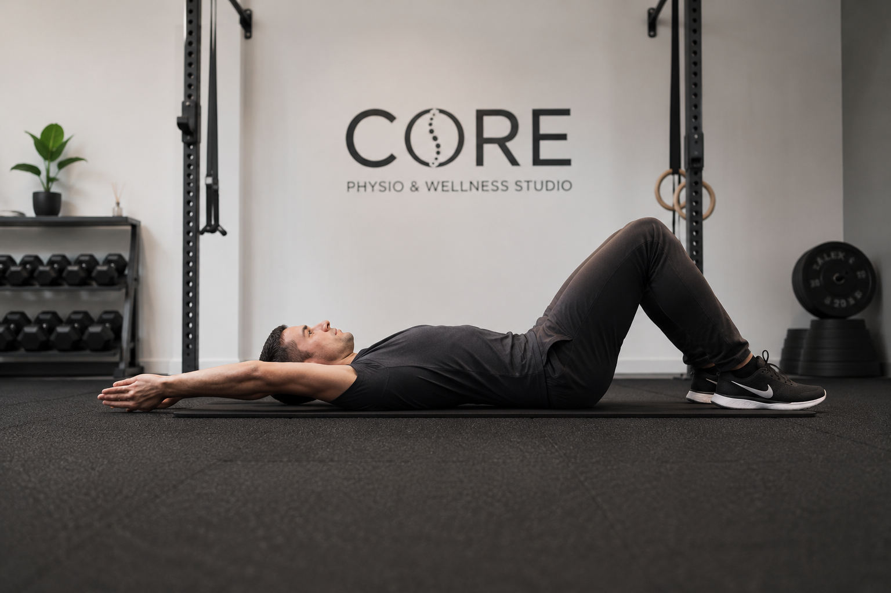
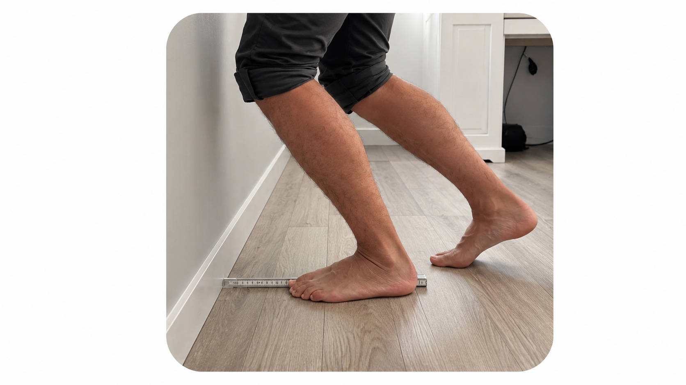
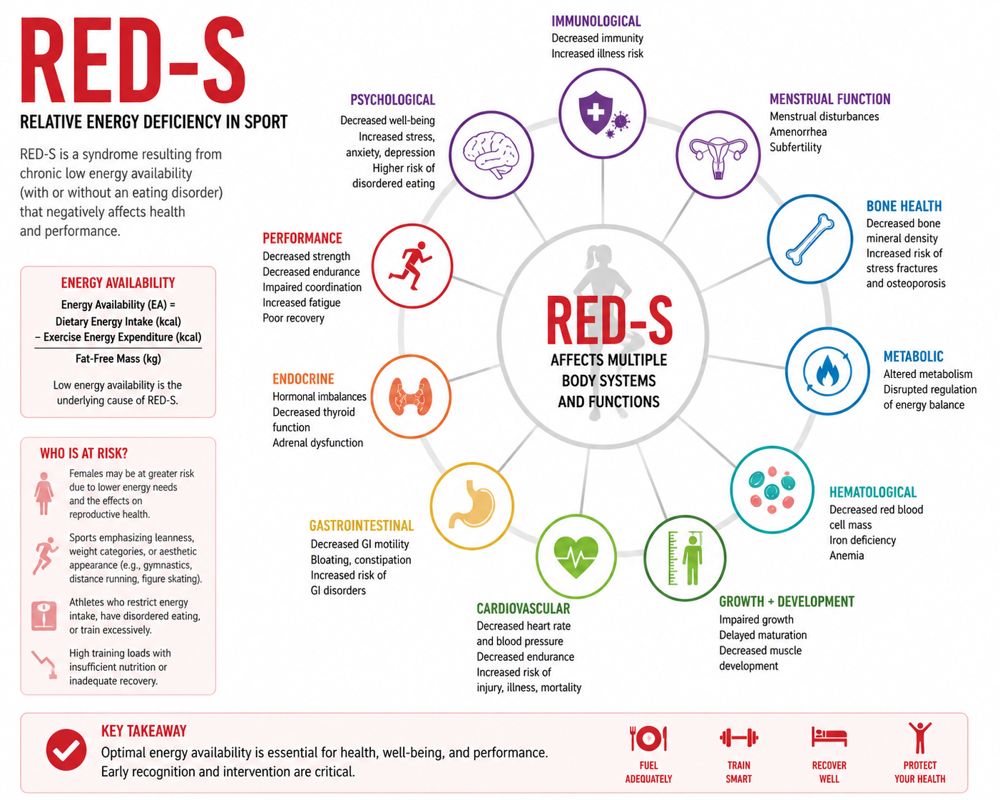

Module 03 · 03 of 07
Written Guide + Quiz
Why It Matters
Before designing any training programme, a climbing coach must understand the individual in front of them. Health screening protects both the client and the coach legally, while fitness assessment provides the objective baseline needed to design effective, personalised programmes and measure progress over time.
By the end of this module, you will be able to:
Health screening before beginning any exercise programme is both an ethical duty and a legal necessity. It identifies contraindications to exercise, flags medical conditions requiring modification of training, and provides documentation of due diligence.
The PAR-Q+ is the globally recognised standard for pre-participation screening. It is a two-stage questionnaire designed to identify individuals who require medical clearance before starting vigorous exercise. The updated PAR-Q+ (2020) replaced earlier versions and includes a detailed follow-up section for those who answer 'yes' to initial questions.
The screening process:
Scope of Practice
As a coach (not a medical professional), you must never attempt to diagnose conditions or override a medical referral recommendation. If the PAR-Q+ indicates a physician referral, you must wait for written medical clearance before proceeding. Document everything.
The PAR-Q+ form and assessment is available to all students on this program in the following website. Once completed the result of the screening will automatically be emailed to the coach and the client.
📋 PAR-Q+ Screening ToolBeyond the PAR-Q+, a thorough initial consultation should gather:
The Sample General Medical Questionnaire is available to members of this site via the following link:
📋 Athlete Medical QuestionnaireRisk stratification classifies individuals according to their likelihood of experiencing an adverse cardiac event during exercise. This determines the level of supervision and the appropriateness of high-intensity exercise prescription.
| Risk Level | Profile | Recommendation |
|---|---|---|
| Low Risk | No signs or symptoms of cardiovascular, metabolic, or renal disease; meets physical activity guidelines | May begin moderate and vigorous exercise without restriction |
| Moderate Risk | One or more cardiovascular risk factors (hypertension, dyslipidaemia, family history, smoking, sedentary lifestyle, obesity) | Light to moderate exercise acceptable; physician consultation recommended before vigorous exercise |
| High Risk | Known cardiovascular, metabolic (type 1 or 2 diabetes), or renal disease; or signs/symptoms (chest pain, dyspnoea, syncope) | Medical clearance required before any structured exercise programme |
| Risk Factor | Threshold / Definition |
|---|---|
| Age | Men ≥45 years; Women ≥55 years |
| Family history | First-degree relative with MI or sudden death before age 55 (male) or 65 (female) |
| Smoking | Current smoker or quit within the past 6 months |
| Sedentary lifestyle | Not meeting 150 minutes of moderate-intensity or 75 minutes of vigorous activity per week |
| Obesity | BMI ≥30 kg/m² or waist circumference >102 cm (men) / >88 cm (women) |
| Hypertension | Resting BP ≥130/80 mmHg on two separate occasions, or on antihypertensive medication |
| Dyslipidaemia | LDL (Low Density Lipoprotein) ≥130 mg/dL (Males and females), HDL (High Density Lipoprotein) <40 mg/dL (males) or <50 mg/dL (females). |
| Prediabetes | Fasting blood glucose 100–125 mg/dL or HbA1c 5.7–6.4% |
Resting vital signs provide important baseline physiological data and can flag health concerns before exercise begins. Coaches should be able to measure and interpret the following accurately.
Resting heart rate is best measured first thing in the morning, before the client rises. For a session measurement, allow 5 minutes of quiet seated rest before taking a 60-second radial (wrist) or carotid (neck) pulse count. Normal range is 60–100 bpm; well-trained athletes may be 40–60 bpm.
Consistently elevated RHR (above baseline by 7–10 bpm) may indicate overtraining, dehydration, illness, or elevated stress — a useful monitoring tool across a training block.

Blood pressure is measured using a sphygmomanometer (manual or automated).
The client should be seated and rested for at least 5 minutes. Two readings should be taken 2 minutes apart and averaged.
The Systolic measurement is the amount of pressure in the arteries when the heart is contracting and the Diastolic measurement is the amount of pressure in the arteries when the heart is relaxing.

| Classification | Systolic (mmHg) / Diastolic (mmHg) |
|---|---|
| Normal | < 120 / < 80 |
| Elevated | 120–129 / < 80 |
| High (Stage 1 Hypertension) | 130–139 / 80–89 |
| High (Stage 2 Hypertension) | ≥ 140 / ≥ 90 |
| Hypertensive Crisis (refer immediately) | > 180 / > 120 |
| Hypotension (low BP) | < 90 / < 60 |
Count the number of full breath cycles (inhale + exhale) in 30 seconds and multiply by two. Normal resting range is 12–20 breaths/min. An elevated rate may indicate respiratory distress, anxiety, or cardiovascular compromise.
Body composition refers to the proportion of fat mass versus fat-free mass (muscle, bone, organs, water) in the body. For climbing coaches, body composition is relevant because the power-to-weight ratio significantly affects performance on steep terrain. However, coaches must approach this topic with care — disordered eating and weight-cutting behaviours are documented risks in the climbing community.
Ethical Warning
Never prescribe weight loss goals without careful consideration of the athlete's relationship with food and body image. If a client displays signs of disordered eating, restrict body composition discussion and refer to an appropriate professional. Performance and health should always be framed as the goal, not aesthetics or weight.
| Method | Description, Accuracy & Practical Use |
|---|---|
| BMI (Body Mass Index) | Weight (kg) / Height² (m²). Simple but inaccurate — does not distinguish muscle from fat. Use only as a population-level screening tool, not individual assessment. |
| Skinfold Calipers | Measures subcutaneous fat at standard sites (e.g. Jackson-Pollock 3- or 7-site protocols). Requires trained technique. Practical, low cost, but operator-dependent. |
| Bioelectrical Impedance Analysis (BIA) | Sends a weak electrical current through the body; fat impedes flow more than muscle. Easy to administer but sensitive to hydration status. Useful for tracking trends. |
| DEXA (Dual-Energy X-ray Absorptiometry) | Gold standard — accurately measures fat, lean mass, and bone density. Not typically available to coaches; used in research and clinical settings. |
| Circumference Measurements | Waist, hip, chest, arm, thigh measurements. Quick, no equipment required beyond a tape. Tracks localised changes over time; useful for body composition monitoring in the field. |
Fitness testing provides objective data that guides programme design and measures progress. For climbing coaches, tests should be selected to assess the physical qualities most relevant to climbing performance. Results should always be interpreted in the context of the individual's goals, history, and climbing level.
The participants on this course are given access to the Core Learning Advanced Climbing Assessment. Once completed by athletes, they and the coach will receive a copy of the report and how it compares to averages established over testing of all athletes to date.
📊 Advanced Climbing AssessmentThe tests within the Core Learn assessment are discussed below.
| Test | What It Measures & Protocol |
|---|---|
| Height | Measured barefoot with back to a wall (cm). |
| Weight | Measured barefoot standing with both legs on a scale (kg). |
| Arm Reach (Wingspan) | From finger tip to finger tip reaching out sideways whilst facing the wall. |
| Max Vertical Reach | Standing barefoot, reaching up as high as possible with the right hand. Measured from ground to fingertips. This mark is later used for measuring max jump height. |
| Test | What It Measures & Protocol |
|---|---|
| Maximum Rep Pull-up Test | Max number of bar pull ups (arms shoulder width apart; feet always facing forward; no kipping or leg movement allowed; must obtain lock off and chin over bar) |
| Two Repetition Max Pull Up test | Complete 2 pull-ups using the maximum weight you can. Add weight to your body using a harness or sling. It may take several sets to find a max weight. Two pull-ups must be completed from nearly straight arms to chin at bar in a controlled manner, without any movement in the lower body. Hands should be at around shoulder width with palms facing away. |
| Max Number Push Ups | Number of push ups in a minute (fingers facing forwards; elbows stay at sides; at the bottom make sure the chest touches the ground before pushing up again) |
| Max jump for height | Standing jump for height (cm). Difference measured from finger tips on max reach standing to jumping. |
| Test | What It Measures & Protocol |
|---|---|
| Hanging L-sit | Engage shoulders, lift legs as straight as flexibility allows to perpendicular with body. Hold as long as possible. If legs drop past 45 degrees athletes have 1 chance to correct. If they drop again, time is taken. (seconds) |
| Hollow Body Hold | Lying on the ground. Extend arms so shoulders are raised off the floor and then straighten and lift legs into a low dish position. Do not allow the lower back to rise off the floor whilst in this position. Raise the arms straight so biceps touch ears. Record how long the athlete can hold this position with good form throughout. If they reach 120 seconds, stop the test and record a score of 120 seconds. |
| Front Extended Plank | From a press up position, walk your hands as far forwards as possible. Maintain a flat back by tensing core and glutes, and be sure not to let the lower back sag. Hold this position for as long as possible. If athlete reaches 240 seconds stop and record 240 seconds (seconds) |
Option 1: Tindeq Testing
| Test | What It Measures & Protocol |
|---|---|
| Peak Force | You pull as hard as you can on a hold for a few seconds. The Tindeq device records the maximum force you produce. It measures your maximum finger/grip strength. |
| Rate of Force Generation | You pull explosively and the app measures how quickly you generate force — either over the time taken to go from 20–80% of max force, or over a fixed window (e.g. 100–300 ms). It captures contact strength — how fast you can grip. |
| Critical Force | Requires testing all three energy systems — essentially you perform multiple all-out efforts of different durations, and the app calculates the force level you could theoretically sustain indefinitely. It's expressed as a percentage of peak force and gives a much more meaningful picture of your aerobic finger capacity than a simple endurance hold. |
Option 2: Edges with Weight
| Test | What It Measures & Protocol |
|---|---|
| Max weighted hang | The aim of this test is to find the maximum total load the athlete can hang with 2 arms for 7 seconds using either a strict half crimp or an open hand grip (whichever is the preferred position) on a 20mm edge. |
| Loaded Repeaters | Use 80% of their max hang weight (80% of body weight plus added weight) achieved in the two arm weighted hang from a 20mm edge. Hang for 7 seconds followed by 3 seconds of rest, repeated to failure. Record total time tested till failure including resting time (sec) |
Option 3: Edges unweighted
| Test | What It Measures & Protocol |
|---|---|
| 20mm hangs | Test how long the athlete can hang their body weight with arms straight from the 20mm edges on the beast maker or similar. Keeping shoulders engaged. |
| Repeaters | On the 20mm edges; Hang for 7 seconds with both arms, scapulars engaged; 3 seconds rest; repeat till failure (total seconds till failure) |
| Test | What It Measures & Protocol |
|---|---|
| 90 degree Lock off | Length of time hanging with both arms at 90 degrees elbow flexion from a jug. Timed till unable to maintain 90 degrees elbow flexion. Allowed 1 warning to return to 90 degrees (seconds) |
| One arm hang | One arm hangs from a slot (2 pad) on a beast maker or similar, shoulders engaged, for time (test both sides separately) (seconds) |
| Power | Power - From matching on a jug on a slightly overhanging wall - campus with one arm at a time as high as possible, just to touch. Distance from jug to fingertip reach (cm). |
| Test | What It Measures & Protocol |
|---|---|
| Cossak Squat | Side to be tested - knee bends, other knee stays straight and that foot MUST stay flat on ground. Measure range of knee bend |
| Box step up | Box step up against wall. From a position facing the wall and where both toes are touching the wall (both the foot on the ground and the foot on the box), step up with control till standing upright. 3 attempts maximum. Document height of box (20, 24, 30 inch). Repeat both sides. |
| Test | What It Measures & Protocol |
|---|---|
| Sit-and-Reach | Posterior chain flexibility (hamstrings, lower back) — client sits with legs straight and reaches forward along a measuring box. Record furthest reach maintained for 2 seconds. |
| Hip Internal & External Rotation Screen | Hip mobility for climbing — prone with knee bent (90 degrees); allow knee to fall outward (IR) or inward (ER); measure angle from vertical. Normal IR >=40; Normal ER >=45 degrees. |
| Shoulder Flexion Screen | Overhead reach mobility — lying supine, arms raised overhead; note if lower back arches (indicating limited shoulder/thoracic mobility). |
| Ankle Dorsiflexion Screen | Ankle mobility for slab climbing — kneeling lunge test; measure distance from big toe to wall while heel remains flat. <10 cm indicates restriction. |

Sit-and-Reach & related test positions

Hip Internal & External Rotation Screen

Shoulder Flexion Screen

Ankle Dorsiflexion Screen
Goal setting is one of the most powerful tools a coach has. Clear, well-structured goals align the athlete's motivation with the training process and provide objective benchmarks for evaluating progress. The SMART framework provides a practical structure for setting high-quality goals.
| SMART Letter | Definition & Climbing Example |
|---|---|
| S — Specific | The goal should clearly define what is to be achieved, for whom, and how. NOT: 'I want to get stronger.' YES: 'I want to be able to complete 10 full pull-ups with controlled tempo.' |
| M — Measurable | There must be a way to objectively measure progress and know when the goal has been achieved. Include quantifiable indicators — grade, weight, reps, time, distance. |
| A — Achievable | The goal should be challenging but realistic given the athlete's current level, time available, and life commitments. Unachievable goals destroy motivation. |
| R — Relevant | The goal must matter to the athlete and align with their broader climbing objectives. A goal that the coach sets but the athlete doesn't care about will not drive effort. |
| T — Time-bound | There should be a clearly defined endpoint or review point. This creates urgency and allows periodic reassessment. |
SMART goals can operate at three levels, and effective coaching uses all three simultaneously:
Coaching Tip
When a client is discouraged by a lack of outcome progress (e.g. unable to climb a specific route), redirect focus to performance and process goals. Progress in these areas will eventually lead to outcome success, and maintaining motivation through the process is the coach's most important job.
RED-S occurs when an athlete's caloric intake does not meet the energy demands of both daily life and training.
This mismatch can impair reproductive health, bone health, immunity, metabolism, cardiovascular health, and psychological wellbeing.
In climbing, the perceived performance advantage of being lighter has historically contributed to a culture where undereating can go unnoticed or even be quietly encouraged.
As a coach, your role is not to diagnose RED-S, but to recognise warning signs — persistent fatigue, frequent illness or injury, mood changes, and disordered eating behaviours — and to create an environment where healthy fuelling is the norm.
The International Olympic Committee (IOC) has noted that RED-S often goes unrecognised by athletes and coaches alike, and may be unintentionally worsened by sports culture and the perceived short-term gains from restricting calorie intake.

World Climbing's Screening Policy
World Climbing became the first International Federation to introduce comprehensive RED-S regulations, implementing a screening policy ahead of the 2024 season.
For coaches with athletes competing at national or international level, understanding the policy is vital — screening exists to protect athlete health, not to penalise.
The first level of screening that World Climbing requires National Federations to conduct on competing athletes is a combination of basic measurements and questionnaires. These screenings and the results are available to coaches of this course via the "RED-S screening resource" (link below). Even if a coaches athletes are not competitive, an awareness of RED-S warning signs and use of the screening tool can be a helpful indicator of concerns.
📋 RED-S Screening ToolThis module established the essential process of getting to know a client before designing any programme. Key points:
| PAR-Q+ | Physical Activity Readiness Questionnaire — a standardised pre-participation screening tool that identifies individuals who require medical clearance before exercising. |
| Risk Stratification | The process of classifying individuals into low, moderate, or high cardiovascular risk categories to guide safe exercise prescription. |
| Resting Heart Rate | The number of heartbeats per minute when the body is completely at rest; a useful marker of cardiovascular fitness and recovery status. |
| Systolic Blood Pressure | The peak pressure in the arteries when the heart contracts; the upper number in a blood pressure reading. |
| Diastolic Blood Pressure | The pressure in the arteries between heartbeats (at rest); the lower number in a blood pressure reading. |
| BMI | Body Mass Index — weight divided by height squared; a rough population-level screening tool with limited individual accuracy. |
| DEXA | Dual-Energy X-ray Absorptiometry — the gold standard for measuring fat mass, lean mass, and bone density. |
| BIA | Bioelectrical Impedance Analysis — estimates body composition by measuring resistance to a small electrical current; sensitive to hydration levels. |
| Dead Hang Test | A field test of finger strength in climbers; performed on a standardised edge depth for maximum duration. |
| SMART Goals | A goal-setting framework: Specific, Measurable, Achievable, Relevant, Time-bound. |
| Outcome Goal | A goal focused on the end result (e.g. completing a specific climbing grade); influenced by factors partially outside the athlete's control. |
| Process Goal | A goal focused on daily habits and behaviours (e.g. completing all training sessions); entirely within the athlete's control. |
| Scope of Practice | The defined boundaries of a coach's professional competence; coaches must not diagnose, prescribe medical treatment, or act outside their qualification level. |
Looking Ahead
In Module 4 — Principles of Exercise Programming — we will use assessment data to build training programmes using the FITT-VP principle, basic periodisation models, and structured recovery strategies.